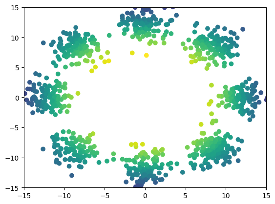

Diffusion Schrödinger Bridge with Applications to Score-Based Generative Modeling
- What is score-based generative modeling?
- What is a Schrödinger Bridge?
- Two dimensional examples
- MNIST dataset
- CelebA exploration
- Dataset interpolation
What is score-based generative modeling?
In generative modeling we are interested into designing algorithms which transform a given distribution $p_{\mathrm{prior}}$ into a given data distribution $p_{\mathrm{data}}$. We have access to the data distribution only through samples. In the last years, generative modeling has become a classical task in machine learning and image processing. There is a flurry of frameworks which aim at solving this problem such as Energy-Based models, Generative Adversarial Networks, normalizing flows, Variational Auto-encoders or diffusion score-matching techniques. The latter has shown great promises in outperforming GANs in term of visual quality, [1] and can be recast as the discretization of some diffusion process and thus is also appealing from a mathematical point of view.Let us recall some of the basics concepts of score-based generative modeling, see also Yang Song blogpost for an introduction or the original papers [2,3]. If we have access to a (Ornstein-Ulhenbeck) diffusion $$ \mathrm{d} \mathbf{X}_t = -\alpha \mathbf{X}_t \mathrm{d} t + \sqrt{2} \mathrm{d} \mathbf{B}_t \ , \qquad \mathbf{X}_0 \sim p_{\mathrm{data}} \ ,$$ with $\alpha > 0$. The process $(\mathbf{X}_t)_{t \in [0,T]}$ is interpreted as a noising process, perturbing the data distribution $p_{\mathrm{data}}$. We denote $p_{\mathrm{prior}}$ the invariant distribution of the noising process, here $p_{\mathrm{prior}} = \mathcal{N}(0,1/\alpha)$. If $T > 0$ is large enough then the distribution of $\mathbf{X}_T$ is close to $p_{\mathrm{prior}}$ due to the ergodicity of the Ornstein-Ulhenbeck process. Then one can (approximately) sample from $p_{\mathrm{data}}$ by first sampling from $p_{\mathrm{prior}}$ and reversing the dynamics of $(\mathbf{X}_t)_{t \in [0,T]}$. Surprisingly this time-reversal operation leads to another diffusion process with explicit drift and diffusion matrix [4]. $$ \mathrm{d} \mathbf{Y}_t = \{\alpha \mathbf{Y}_t + 2 \nabla \log p_{T-t}(\mathbf{Y}_{t}) \}\mathrm{d} t + \sqrt{2} \mathrm{d} \mathbf{B}_t \ , \qquad \mathbf{Y}_0 \sim p_{\mathrm{prior}} \ ,$$ where $p_t$ is the density of $\mathbf{X}_t$. A generative model can be obtained using an Euler-Maruyama discretization of the previous diffusion process. We end up with the following Markov chain. $$ Y_{k+1}^\star = Y_k^\star + \gamma_{k+1} \{\alpha Y_k^\star + 2 \nabla \log p_{T- t_k}(Y_k^\star)\} + \sqrt{2 \gamma_{k+1}} \ ,$$ where $\{\gamma_{k+1}\}_{k=0}^{N-1}$ is a sequence of stepsizes and $t_k = \sum_{j=0}^{k-1} \gamma_{j+1}$. The Markov chain $\{Y_k^\star\}_{k=0}^N$ cannot be computed in practice because we do not have access to the logarithmic gradient (Stein score) $\nabla \log p_{t}$. In score-based generative modeling techniques this score is approximated by a neural network $s_{\theta^\star}$ solving the following variational problem $$\theta^\star = \mathrm{argmin}_\theta \mathrm{E}[\| \mathbf{Z}/\sigma_t + s_{\theta}(\mathbf{X}_t) \|^2] \ \, $$ where we recall that solutions of the Ornstein-Ulhenbeck process can be written as $\mathbf{X}_t = m_t \mathbf{X}_0 + \sigma_t \mathbf{Z}$, with $\mathbf{Z} \sim \mathcal{N}(0,1)$, $m_t = \exp[-\alpha t]$ and $\sigma_t^2 = (1 - \exp[-2 \alpha t])/\alpha$. The variational formulation for $s_{\theta^\star}$ can be obtained using the following formula $$ \nabla \log p_t (x) = \mathrm{E}[(m_t \mathbf{X}_0 - \mathbf{X}_t)/\sigma_t^2 | \mathbf{X}_t=x] = -\mathrm{E}[\mathbf{Z}/\sigma_t | \mathbf{X}_t=x] $$ Finally the generative model is given by the following Markov chain $$ Y_{k+1} = Y_k + \gamma_{k+1} \{\alpha Y_k + 2 s_{\theta^\star}(T- t_k, Y_k)\} + \sqrt{2 \gamma_{k+1}} \ .$$ These ideas are at the core of every score-based generative modeling method.

Image extracted
from Yang Song
blog. Generative model for CelebA.
In the next paragraph we introduce our main contribution: Diffusion Schrödinger Bridge, a new algorithm which generalizes existing score-based methods allowing to significantly reduce the number of stepsizes needed in order to define score-based generative modeling. This contribution also removes the limitation for $p_{\mathrm{prior}}$ to be Gaussian and enables future applications in high-dimensional optimal transport.
What is a Schrödinger Bridge?
⤴ Go backThe Schrödinger Bridge (SB) problem is a classical problem appearing in applied mathematics, optimal control and probability; see [5, 6, 7]. In the discrete-time setting, it takes the following (dynamic) form. Consider as reference diffusion $(\mathbf{X}_t)_{t \in [0,T]}$ with distribution $\mathbb{P}$ describing the process adding noise to the data. We aim to find $\pi^\star$ such that $\pi^\star_0 = p_{\mathrm{data}}$ and $\pi^\star_T = p_{\mathrm{prior}}$ and minimize the Kullback-Leibler divergence between $\pi^\star$ and $\mathbb{P}$. More precisely $$ \pi^\star = \mathrm{argmin} \ \{\mathrm{KL}(\pi|\mathbb{P})\ , \ \pi_0 = p_{\mathrm{data}} \ , \ \pi_N = p_{\mathrm{prior}}\}$$ In this work we introduce Diffusion Schrödinger Bridge (DSB), a new algorithm which uses score-matching approaches [2,3] to approximate the Iterative Proportional Fitting (IPF) algorithm, an iterative method to find the solutions of the SB problem. DSB can be seen as a refinement of existing score-based generative modeling methods [5, 6]. In the discrete world, IPF is also known as the Sinkhorn algorithm, see [8] for a review.
 First, let us describe IPF. In order to find the solution of the SB problem
IPF operates iteratively by successively solving half-bridge problems. Doing
so, we define a sequence of distributions $(\pi^n)_{n \in \mathbb{N}}$ such
that $$ \pi^{2n+1} = \mathrm{argmin} \{ \mathrm{KL}(\pi|\pi^{2n}) \ , \
\pi_N = p_{\mathrm{prior}} \} \ , \\ \pi^{2n+2} = \mathrm{argmin} \{
\mathrm{KL}(\pi|\pi^{2n+1}) \ , \ \pi_0 = p_{\mathrm{data}} \} \ , $$ with
initial condition $\pi^0 = \mathbb{P}$ the reference dynamics. For large
$n$, $\pi^n$ is close to the Schrödinger bridge $p^\star$. Hence, a
generative model is obtained by sampling from $\pi^{2n+1}$.
First, let us describe IPF. In order to find the solution of the SB problem
IPF operates iteratively by successively solving half-bridge problems. Doing
so, we define a sequence of distributions $(\pi^n)_{n \in \mathbb{N}}$ such
that $$ \pi^{2n+1} = \mathrm{argmin} \{ \mathrm{KL}(\pi|\pi^{2n}) \ , \
\pi_N = p_{\mathrm{prior}} \} \ , \\ \pi^{2n+2} = \mathrm{argmin} \{
\mathrm{KL}(\pi|\pi^{2n+1}) \ , \ \pi_0 = p_{\mathrm{data}} \} \ , $$ with
initial condition $\pi^0 = \mathbb{P}$ the reference dynamics. For large
$n$, $\pi^n$ is close to the Schrödinger bridge $p^\star$. Hence, a
generative model is obtained by sampling from $\pi^{2n+1}$.
We know show how this problem is related to score-based generative modeling. Assume that $\pi^{2n}$ is the measure associated with the diffusion $$ \mathrm{d} \mathbf{X}_t^n = f_t^n(\mathbf{X}_t^n) \mathrm{d} t + \sqrt{2} \mathrm{d} \mathbf{B}_t \ , \quad \mathbf{X}_0^n \sim p_{\mathrm{data}} \ , $$ then we show that $(\pi^{2n+1})^R$ (where $R$ denotes the time-reversal operation) is associated with the diffusion $$ \mathrm{d} \mathbf{Y}_t^n = b_{T-t}^n(\mathbf{Y}_t^n) \mathrm{d} t + \sqrt{2} \mathrm{d} \mathbf{B}_t \ , \quad \mathbf{Y}_0^n \sim p_{\mathrm{prior}} $$ where $$ b_{t}^n(x) = -f_t^n(x) + 2 \nabla \log p_t^n(x) \ , $$ with $p_t^n$ the density of $\pi_t^{2n}$. Repeating this procedure we obtain that $\pi^{2n+2}$ is associated with the diffusion $$ \mathrm{d} \mathbf{X}_t^{n+1} = f_t^{n+1}(\mathbf{X}_t^{n+1}) \mathrm{d} t + \sqrt{2} \mathrm{d} \mathbf{B}_t \ , \quad \mathbf{X}_0^{n+1} \sim p_{\mathrm{data}} \ , $$ where $$ f_{t}^{n+1}(x) = -b_t^n(x) + 2 \nabla \log q_t^n(x) \ , $$ with $q_t^n$ the density of $\pi_t^{2n+1}$. We can then iterate this procedure. Of course we can not sample from these dynamics directly and we discretize them using Euler-Maruyama approximation. The logarithmic gradients are then approximated using score-matching techniques (although for memory reasons we do not approximate the scores but the drift functions). This discretization and variational approximation define our Diffusion Schrödinger Bridge algorithm.
Some advantages
- Contrary to existing score-based generative modeling methods which require the reference process to converge to $p_{\mathrm{prior}}$ the convergence of our algorithm is determined by the convergence of the IPF.
- The DSB algorithm can be used on top of existing algorithms. Hence, our method can be seen as a refinement of original score-based generative models and all techniques used to improve the quality/speed of theses methods can be implemented for DSB.
- DSB does not require $p_{\mathrm{prior}}$ to be Gaussian. In fact we only require having access to samples from $p_{\mathrm{prior}}$ which can be another dataset. In particular we are able to perform dataset interpolation. This paves the way for further applications for high dimensional optimal transport.
- DSB does not achieve state-of-the-art generative modeling results (yet) due to compute limitations as we use existing architectures in order to parameterize our score approximations. These architectures are deep and notably instable (for instance they require the use of exponential moving average). This requires careful selection of the parameters of DSB.
Disclaimer: in this short paragraph I tried to give a presentation of our work from the continuous-time point of view. In the paper we follow a similar presentation but with a discrete-time point of view. The two formulations define the same algorithm but the discrete-time formulation avoids the need of reverse-time diffusions at the expense of a Gaussian approximation.
In the next sections we show some of our results on two dimensional examples, MNIST, CelebA and dataset interpolation.
Two dimensional examples
⤴ Go backFor each of the row, we show the target density on the left and an animated plot of the DSB iterations on the right. Here the prior density $p_{\mathrm{prior}}$ is given by a Gaussian density with zero mean and covariance matrix $\sigma \mathrm{Id}$ where $\sigma$ is the variance computed from the target dataset. We fix the number of stepsizes to $20$.





MNIST
⤴ Go backFirst we show some of samples obtained with our DSB algorithm (obtained with 30 steps in the backward dynamics).
Original dataset (left) and generated samples (right).

CelebA exploration
⤴ Go backIn our work we apply DSB for the generation of CelebA.


Dataset interpolation
⤴ Go backFinally, we present some dataset interpolations experiments in two dimensions,


References
⤴ Go back[1] Prafulla Dhariwal and Alex Nichol Diffusion models beat GAN on Image Synthesis In: arxiv preprint:2105.05233
[2] Yang Song and Stefano Ermon Generative modeling by estimating gradients of the data distribution In: Advances in Neural Information Processing Systems 2019
[3] Jonathan Ho, Ajay Jain and Pieter Abbeel Denoising diffusion probabilistic models In: Advances in Neural Information Processing Systems 2020
[4] Hans Föllmer Random fields and diffusion processes In: École d'été de Probabilités de Saint-Flour 1985-1987
[5] Christian Léonard A survey of the Schrödinger problem and some of its connections with optimal transport In: Discrete & Continuous Dynamical Systems-A 2014
[6] Yongxin Chen, Tryphon Georgiou and Michele Pavon Optimal Transport in Systems and Control In: Annual Review of Control, Robotics, and Autonomous Systems 2020
[7] Aapo Hyvärinen and Peter Dayan Estimation of non-normalized statistical models by score matching In: Journal of Machine Learning Research 2005
[8] Gabriel Peyre and Marco Cuturi Computational Optimal Transport In: Foundations and Trends in Machine Learning 2019